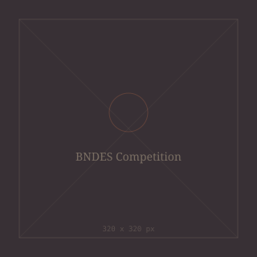

Add your image here'"/>This project was developed for the National Architecture Competition for the Annex Building of the BNDES Headquarters in Rio de Janeiro, organised by Brazil's National Bank for Economic and Social Development (BNDES).
Led by Biselli Katchborian Arquitetos Associados, the proposal was awarded third place nationally, recognised for its balanced integration of architectural expression, structural clarity, and environmental performance.
The design established a dialogue between transparency, rhythm, and urban presence, resulting in a volumetric composition that both complements the existing BNDES building and introduces a contemporary civic identity. Key strategies included daylight optimisation, solar protection, and flexible interior layouts adaptable to evolving institutional needs.
My contributions focused on developing architectural and technical drawings, ensuring consistency between design intent and constructability. Working within a large multidisciplinary team strengthened my understanding of complex project workflows, documentation standards, and architectural detailing within a high-profile professional environment.
The project was published on ArchDaily Brasil and in the book Estratégias do Belo — A Arquitetura de Biselli e Katchborian (2014).